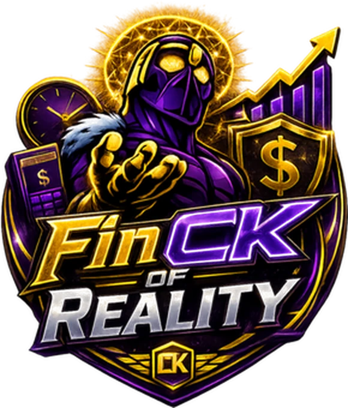
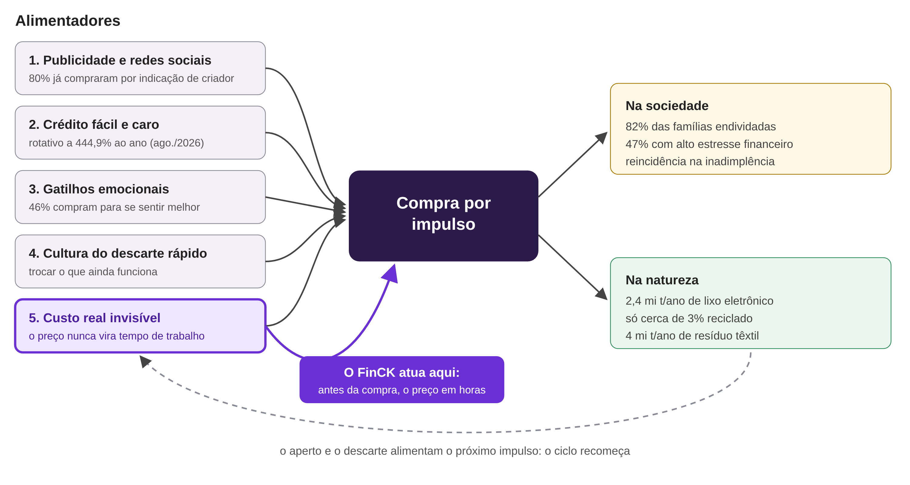
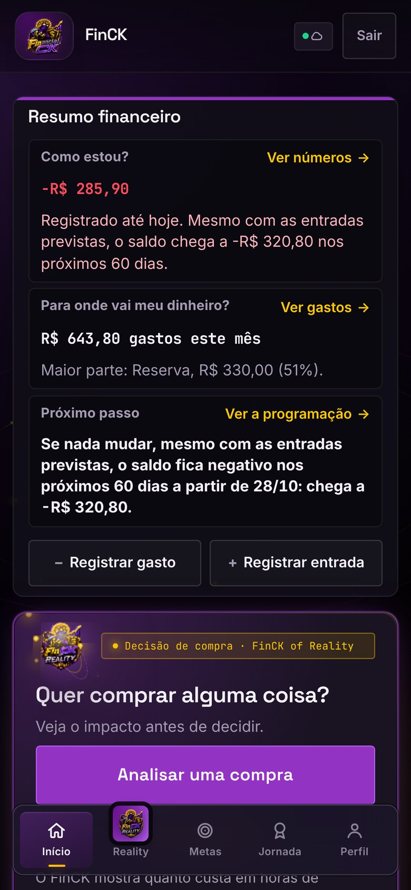
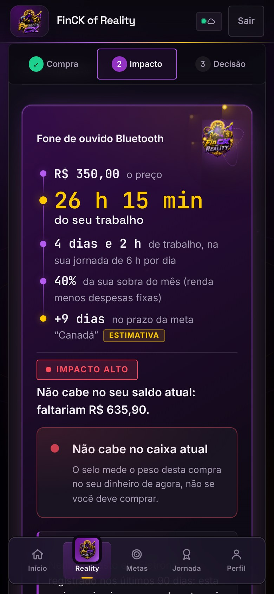
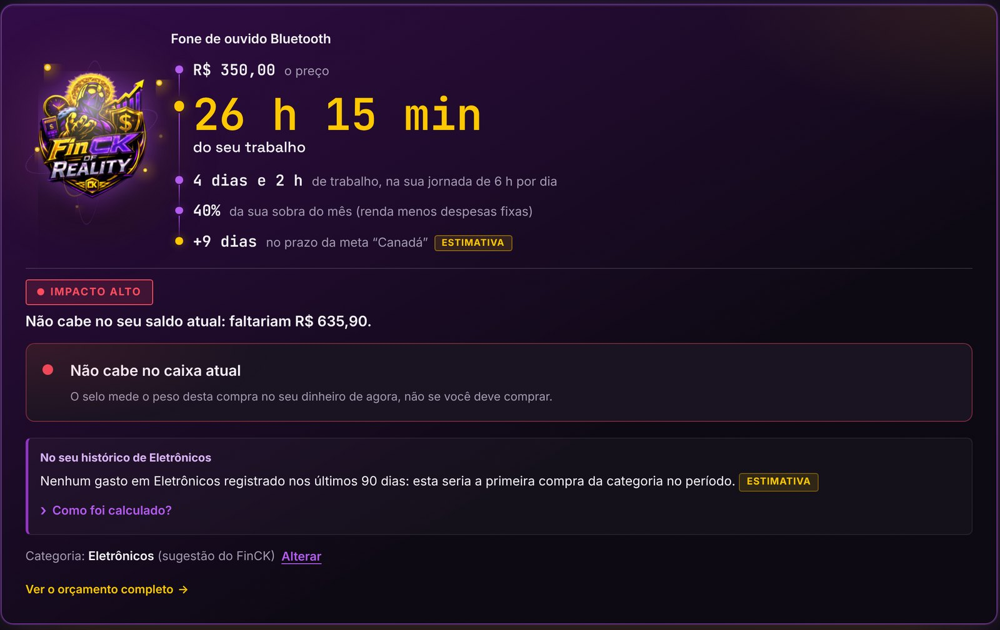
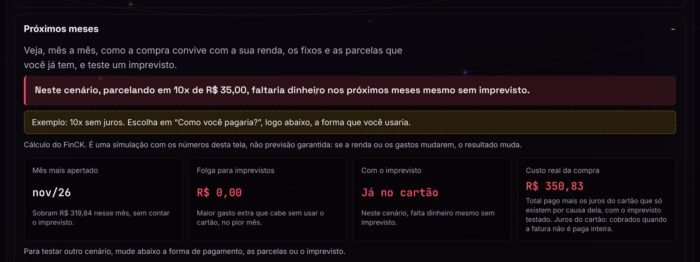
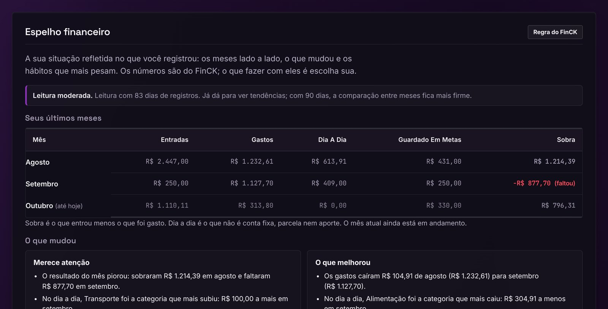
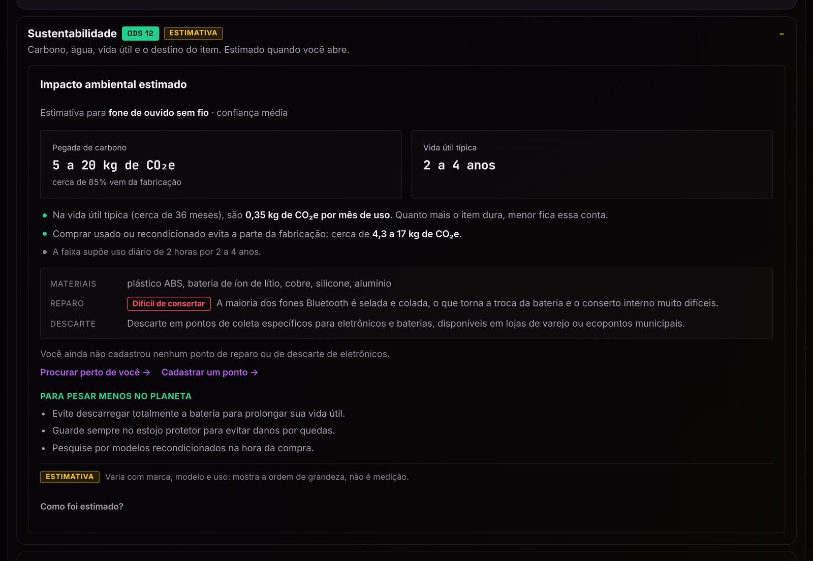
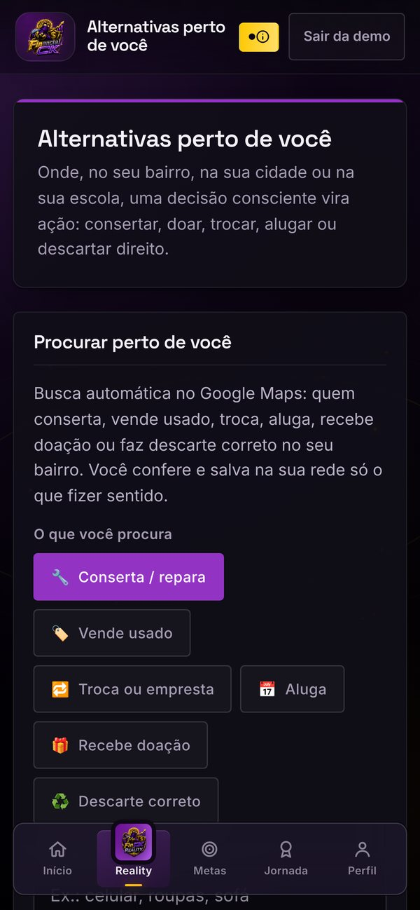
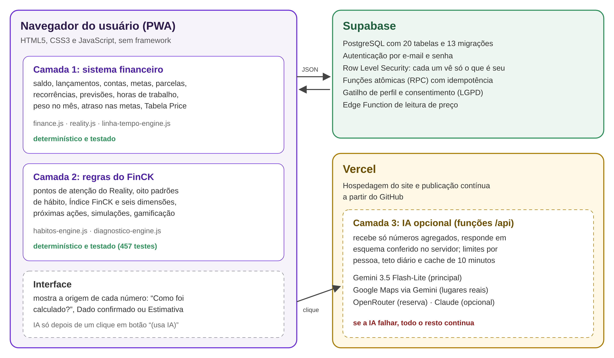

FinCK
Consumo consciente, decisão em tempo real e o impacto do descontrole financeiro na sociedade e no meio ambiente
Projeto interdisciplinar · Técnico em Informática para Internet
Etec Taboão da Serra, Centro Paula Souza
Orientador: Prof. Sullivan Franco Juvenasso
Conscious Knowledge, 2026

O que vamos apresentar
- O tema e o problema: o que o enunciado pediu e a pergunta que guiou o trabalho
- Os dados: endividamento, crédito, comportamento, meio ambiente e Taboão da Serra
- A fundamentação: por que informação no momento certo muda a decisão
- A solução: o FinCK funcionando, da compra ao impacto ambiental
- Como foi feito: metodologia, arquitetura, matemática e disciplinas
- Resultados e conclusão: o que foi entregue, a validação e os próximos passos
O tema: o paradigma do consumo desenfreado e seu impacto na natureza
Encontrar uma solução que reduza o impacto do consumo na sociedade, e não apenas descrevê-lo.
Ter aplicabilidade local, por exemplo em Taboão da Serra, e não um discurso genérico.
Entregar um app web ou mobile que funcione de verdade, e não telas navegáveis.
Exigências definidas pelo corpo docente da Etec Taboão da Serra, com entrega de documentação em ABNT, apresentação e aplicativo funcional.
A pergunta que guiou o projeto
É possível reduzir o consumo por impulso, e o impacto ambiental ligado a ele, com uma ferramenta que traduza o preço de uma compra para uma linguagem que a pessoa entenda na hora, sem precisar de educação financeira prévia?
Hipótese
Mostrar o preço em horas de trabalho, em peso no mês e em atraso nas metas, no momento da decisão, torna a escolha mais consciente. Mostrar o efeito acumulado dos hábitos e oferecer alternativas ao item novo aproxima essa escolha do impacto ambiental.
Oito em cada dez famílias brasileiras estão endividadas
das famílias tinham dívidas em julho de 2026, o maior nível da série pelo sexto mês seguido. O cartão aparece em 85,3% dos casos.
| % das famílias | Jul. | Ago. | Set. |
|---|---|---|---|
| Endividadas | 82,0 | 82,0 | 81,7 |
| Com contas em atraso | 29,8 | 29,9 | 29,6 |
| Sem condições de pagar | ... | 12,5 | 12,5 |
| Renda comprometida | 29,5 | 29,5 | 29,6 |
| Mais da metade da renda comprometida | ... | 19,2 | 19,4 |
Fonte: Peic/CNC, julho a setembro de 2026, cerca de 18 mil famílias (AGÊNCIA BRASIL, 2026; BP MONEY, 2026; TVT NEWS, 2026). "..." indica dado não divulgado.
Quem ganha menos se endivida mais e atrasa mais
Nas famílias de até três salários mínimos, a inadimplência é 2,5 vezes maior. Em agosto, 18,3% delas disseram não ter como pagar as contas atrasadas.
Fonte: Peic/CNC, julho e agosto de 2026 (AGÊNCIA BRASIL, 2026; BP MONEY, 2026). SM: salário mínimo.
O crédito é caro, e esse custo não aparece na hora da compra
é o tempo para uma fatura não paga dobrar no rotativo, a 15,2% ao mês. Desde 2024, a lei limita os juros a 100% do valor original.
Fonte: Banco Central (JORNAL DO COMÉRCIO, 2026; SENADO NOTÍCIAS, 2026); Lei nº 14.690/2023.
A compra por impulso é emocional e influenciada pelas redes
Fontes: Youpix e Nielsen (MEIO & MENSAGEM, 2025); Serasa (2024); Serasa e Opinion Box (BORA INVESTIR, 2025). Pesquisas diferentes, com amostras diferentes.
Falta informação financeira, e a escola ainda não é onde ela chega
dos brasileiros dizem entender pouco ou nada de educação financeira, mas 91% acham o tema importante.
apontam a escola como principal fonte sobre dinheiro. Canais digitais somam 40%.
pontos do Brasil em letramento financeiro no PISA 2022, contra 498 da média da OCDE.
Fontes: Observatório Febraban/Ipespe, 3 mil entrevistas, junho de 2025 (FEBRABAN, 2025); OCDE, PISA 2022 (SUPER RÁDIO TUPI, 2024).
O descontrole financeiro também tira o sono
relatam alto estresse financeiro, e outros 48% estresse médio.
perdem o sono por causa de dinheiro.
trabalham além do necessário para pagar contas.
têm conflitos familiares por dinheiro.
Fonte: Anbima e Datafolha, Raio X do Investidor Brasileiro (SBT NEWS, 2026b).
Do carrinho ao aterro: o Brasil gera muito lixo eletrônico e recicla quase nada
do lixo eletrônico do mundo tem coleta e reciclagem documentadas (62 milhões de t em 2022).
é a parcela reciclada corretamente no Brasil.
de lixo eletrônico por ano: o Brasil é o 5º maior gerador do mundo.
de resíduos têxteis descartados pelos domicílios brasileiros por ano.
Fontes: Global E-waste Monitor 2024 (INTERNATIONAL TELECOMMUNICATION UNION; UNITAR, 2024); Monitor Mercantil (2024); Tribuna de Minas (2025); Agência Brasil (2025).
Taboão da Serra: a cidade mais densa do país, com renda abaixo da média do estado
habitantes por km², a maior densidade demográfica do Brasil, com 273.542 moradores no Censo 2022.
de remuneração média no emprego formal, contra R$ 4,4 mil no estado de São Paulo.
de trabalho para um celular de R$ 1.500 com essa renda: quase dez dias inteiros.
Fontes: IBGE, Censo 2022 (XATAKA BRASIL, 2025); RAIS e IBGE compilados por Caravela (2026). Cálculo dos autores: 22 dias de 8 horas.
Cinco fatores alimentam o ciclo, e o último é o ponto cego

Por que informação no momento certo muda a decisão
Psicologia econômica
Katona (1975): compras do dia a dia são habituais, quase sem deliberação. Um estímulo concreto puxa a decisão para o modo deliberado.
Economia comportamental
Kahneman e Tversky (1979): perdas pesam mais que ganhos. Thaler e Sunstein (2008): o nudge orienta sem proibir.
Finanças comportamentais
Shefrin e Statman (1985) e Statman (2017): orçamento mental e excesso de confiança escondem o efeito somado dos pequenos gastos.
O preço medido em vida
Thoreau (1854) e Dominguez e Robin (1992): o custo de uma coisa é a vida que se troca por ela, em horas de trabalho.
Objetivos
Geral
Desenvolver e documentar um aplicativo web funcional que ajude a pessoa a decidir compras de forma mais consciente, com efeito sobre as finanças e relação explícita com a redução de resíduos da ODS 12.
- Investigar com dados públicos o elo entre consumo, dívida, crédito e resíduos
- Converter preço em horas, peso no mês e atraso em metas, antes da compra
- Identificar hábitos que se acumulam e o efeito deles em 12 meses
- Resolver a aplicabilidade local com alternativas reais perto da pessoa
- Manter todos os cálculos determinísticos, com IA apenas opcional
- Planejar a validação com usuários e documentar em ABNT
Metodologia: pesquisa, construção em ciclos e testes
Psicologia econômica, economia e finanças comportamentais, sociologia do consumo.
Indicadores de 2025 e 2026 da CNC, BC, Serasa, Febraban, IBGE e ONU, conferidos na fonte.
81 versões publicadas de julho a outubro de 2026, com três rodadas de revisão de uso.
Validação com 5 a 10 usuários, com roteiro, indicadores e cuidados da LGPD.
Do protótipo local em MySQL, PHP e Xampp até a arquitetura em nuvem no Supabase e na Vercel.
O FinCK calcula primeiro, você decide, e a IA só ajuda se você pedir
Renda de R$ 1.600, 20 dias de 6 horas: a hora vale R$ 13,33. Um fone de R$ 350 custa 26 h 15 min.


FinCK of Reality: o preço vira horas, peso no mês e atraso na meta

- 26 h 15 min do trabalho da pessoa
- 40% da sobra do mês, depois das contas fixas
- +9 dias no prazo da meta “Canadá”
- Cada número tem “Como foi calculado?” e selo de dado confirmado ou estimativa
- Nunca bloqueia: “a decisão continua sendo sua”
Captura do FinCK em produção, com os dados reais da conta do grupo (2026).
Parcelar cabe hoje? O FinCK simula os próximos meses, com juros e imprevisto

Hábitos de consumo: o que pesa só aparece quando se olha o conjunto

por ano em sete contas fixas pequenas da própria conta do grupo, ou 322,8 horas de trabalho.
- Oito padrões de hábito, com efeito em 12 meses
- Simulação de 10%, 15% ou 20% a menos
- Índice FinCK em seis dimensões
ODS 12 e aplicabilidade local: da decisão individual ao território

Fone de ouvido: 5 a 20 kg de CO₂e, 85% na fabricação. Comprar recondicionado evita a maior parte.

Conserto, usado, troca, aluguel, doação e descarte correto em lugares reais do Google Maps, mais a rede da própria pessoa.
Arquitetura: nenhuma conta depende de um modelo de linguagem

- HTML, CSS e JavaScript, sem framework
- PostgreSQL no Supabase com Row Level Security
- Funções atômicas: aporte, parcela e transferência sem duplicar
- Serverless na Vercel, em vez de contêineres
- IA só por clique, com dados agregados e resposta conferida
A Matemática está em cada número da tela
Exemplo do documento: R$ 350 em 10 vezes a 2,99% ao mês dá parcela de R$ 41,01 e R$ 60,10 de juros, cerca de 4,5 horas de trabalho a mais.
Conteúdos do plano de trabalho de Matemática de 2026: matemática financeira, orçamento familiar, juros, Price e SAC, exponencial, logaritmo e matrizes.
Todas as disciplinas do ano aparecem no projeto
Português: Realismo e o nome “of Reality”; textos multimodais
Inglês: consumo responsável, Abstract e documentação
Educação Física: suplementos, mídia e níveis da Jornada
Química: termoquímica da fabricação e química ambiental
Física: leitura de dados e gráficos; eletrônica
Biologia: densidade populacional e método científico
História: liberalismo, Marx e revoluções industriais
Geografia: território e indicadores socioeconômicos
Matemática: juros, Price, exponencial e logaritmo
Banco de Dados: modelagem, ACID, GRANT e RLS
Nuvem: IaaS, PaaS, contêineres e a escolha serverless
Dispositivos Móveis: abas, diálogos e dados locais
Interfaces Web II: DOM, eventos, Fetch API e promessas
Sistemas Web I: REST, CRUD, migrações e testes
Relações detalhadas no capítulo 10 do documento, com base nos planos de trabalho docente de 2026.
Resultado: um aplicativo em produção, não uma simulação
testes automatizados no navegador, além de oito ferramentas de teste das rotas de IA.
tabelas no banco, criadas por 13 migrações versionadas.
versões publicadas no GitHub entre julho e outubro de 2026.
números calculados por IA: todos vêm de regras do FinCK.
Funcional: publicado em finck-app.vercel.app, com conta, banco e modo de demonstração.
Local: alternativas reais no território de cada pessoa e o desafio da turma.
Mitiga: atua antes da compra e propõe reparo, usado, troca e descarte correto.
Validação com usuários: protocolo pronto dentro do próprio app
- Situação fictícia: renda de R$ 3.500 e um fone de R$ 800
- Sem o FinCK: compraria? o que pesou?
- Com o FinCK: analisar no Reality e abrir a Revisão
- Depois: o que faria agora? qual a diferença entre preço e impacto?
- Questionário de 1 a 5: clareza, facilidade e utilidade
| Indicador | Meta |
|---|---|
| Entenderam o impacto da compra | 80% |
| Perceberam gastos acumulados | 70% |
| Explicaram preço × impacto | 70% |
| Concluíram sem ajuda | 80% |
| Clareza, facilidade, utilidade | ≥ 4 |
De 5 a 10 voluntários, sem dados pessoais nem financeiros reais, conforme a LGPD. Mudar a escolha não é medida de acerto: comprar também pode ser consciente.
Conclusão
Traduzir o preço para tempo de trabalho, no momento da decisão, é uma forma concreta e local de aproximar a escolha de cada pessoa do impacto coletivo do consumo.
Limitações
Depende do que a pessoa registra; estimativas ambientais são ordens de grandeza; exige internet; o efeito educativo depende da validação.
Próximos passos
Aplicar a validação, funcionar sem conexão, relatório anônimo do impacto da turma e parceria com os ecopontos da prefeitura.
Principais referências
AGÊNCIA BRASIL. CNC: endividamento das famílias sobe para 82%, mas inadimplência cai. O Povo, 6 ago. 2026.
BRASIL. Lei nº 14.181, de 1º de julho de 2021 (superendividamento).
BRASIL. Lei nº 14.690, de 3 de outubro de 2023 (Desenrola Brasil e teto de juros do cartão).
DOMINGUEZ, J.; ROBIN, V. Your money or your life. New York: Viking, 1992.
FEBRABAN. Maioria dos brasileiros admite entender pouco de educação financeira. 21 jul. 2025.
INTERNATIONAL TELECOMMUNICATION UNION; UNITAR. The global e-waste monitor 2024.
JORNAL DO COMÉRCIO. Juro médio do rotativo sobe a 444,9% ao ano em agosto. 29 set. 2026.
KAHNEMAN, D.; TVERSKY, A. Prospect theory. Econometrica, 1979.
KATONA, G. Psychological economics. New York: Elsevier, 1975.
NAÇÕES UNIDAS BRASIL. ODS 12: consumo e produção responsáveis. 2026.
SERASA. 10 anos do Mapa da Inadimplência. mar. 2026.
THALER, R.; SUNSTEIN, C. Nudge. New Haven: Yale University Press, 2008.
THOREAU, H. D. Walden; or, life in the woods. Boston, 1854.
XATAKA BRASIL. Taboão da Serra, a cidade mais “apertada” do Brasil. 16 out. 2025.
Lista completa, com endereços e datas de acesso, nas Referências do documento ABNT.
Obrigado.
O mesmo impulso que esvazia uma conta bancária é o que enche um aterro de lixo eletrônico. O FinCK mostra a conta a tempo.
Perguntas da banca são bem-vindas.
finck-app.vercel.app